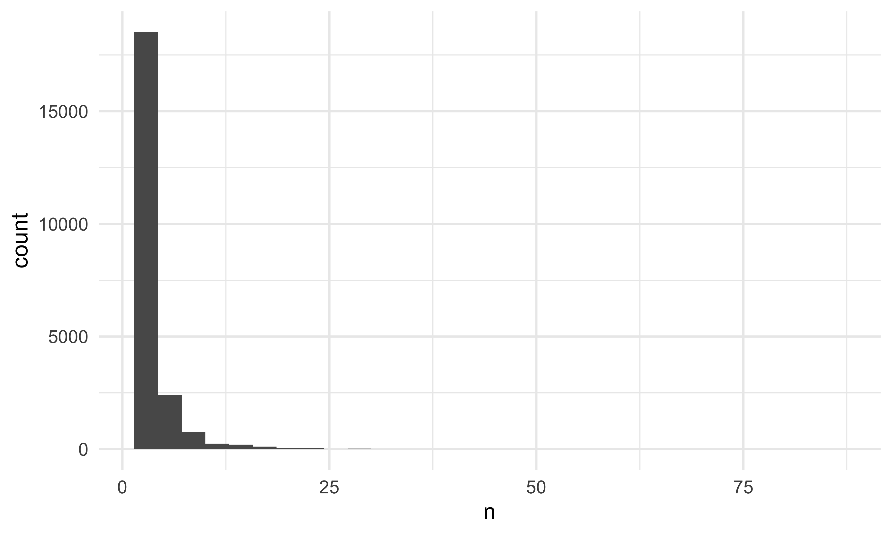

We want to examine whether the violation types vary among boroughs. We predicted that there is no difference in ticket amounts proportions in violation types in different boroughs.
We perform the chi-square test to verify our assumption.
\(H_0:\) the proportions of tickets of violation type in five boroughs are equal; \(H_a:\) there exists at least one borough is different.
## 1) No parking-street cleaning, 2) Failure to display a muni-meter receipt, 3) Inspection sticker-expired/missing, 4) Registration sticker-expired /missing, and 5) Fire hydrant.
five_common_violation =
violation1 %>%
select(borough, violation) %>%
filter(violation %in%
c("NO PARKING-STREET CLEANING",
"FAIL TO DSPLY MUNI METER RECPT",
"INSP. STICKER-EXPIRED/MISSING",
"REG. STICKER-EXPIRED/MISSING",
"FIRE HYDRANT")) %>%
count(violation, borough) %>%
pivot_wider(
names_from = "violation",
values_from = "n"
) %>%
data.matrix() %>%
subset(select = -c(borough))
rownames(five_common_violation) <- c("Bronx", "Brooklyn", "Manhattan", "Queens", "Staten Island")
five_common_violation %>%
knitr::kable(caption = "Results Table")| FAIL TO DSPLY MUNI METER RECPT | FIRE HYDRANT | INSP. STICKER-EXPIRED/MISSING | NO PARKING-STREET CLEANING | REG. STICKER-EXPIRED/MISSING | |
|---|---|---|---|---|---|
| Bronx | 24005 | 32407 | 44436 | 46874 | 35410 |
| Brooklyn | 49347 | 43903 | 67654 | 101494 | 51038 |
| Manhattan | 49902 | 31794 | 40856 | 43963 | 35280 |
| Queens | 72767 | 31610 | 61256 | 60778 | 56589 |
| Staten Island | 6025 | 1946 | 15857 | 16 | 13492 |
chisq.test(five_common_violation)##
## Pearson's Chi-squared test
##
## data: five_common_violation
## X-squared = 53839, df = 16, p-value < 2.2e-16x_crit = qchisq(0.95, 16)
x_crit## [1] 26.29623Interpretation: The result of chi-square shows that \(\chi^2 > \chi_{crit}\), at significant level \(\alpha = 0.05\), sp we reject the null hypothesis and conclude that there does exist at least one borough’s proportion of violation amounts is different from others.
We want to know whether proportions of the population receives fire hydrant violations in each borough are equal. We derived the population of each borough from the most recent census.
First, we will assume: 1) Each car has only one driver; 2) Each car gets one fire hydrant violation in 2021.
url = "https://www.citypopulation.de/en/usa/newyorkcity/"
nyc_population_html = read_html(url)
population = nyc_population_html %>%
html_elements(".rname .prio1") %>%
html_text()
boro = nyc_population_html %>%
html_elements(".rname a span") %>%
html_text()
nyc_population = tibble(
borough = boro,
population = population %>% str_remove_all(",") %>% as.numeric()
)
fire_hydrant = violation1 %>%
select(borough, violation, plate) %>%
filter(violation == "FIRE HYDRANT") %>%
distinct(plate, borough) %>%
count(borough)
boro_population = left_join(fire_hydrant, nyc_population)## Joining, by = "borough"boro_population %>%
knitr::kable(caption = "Results Table")| borough | n | population |
|---|---|---|
| Bronx | 18432 | 1472654 |
| Brooklyn | 28124 | 2736074 |
| Manhattan | 20809 | 1694251 |
| Queens | 21832 | 2405464 |
| Staten Island | 1611 | 495747 |
prop.test(boro_population$n, boro_population$population)##
## 5-sample test for equality of proportions without continuity
## correction
##
## data: boro_population$n out of boro_population$population
## X-squared = 4127.7, df = 4, p-value < 2.2e-16
## alternative hypothesis: two.sided
## sample estimates:
## prop 1 prop 2 prop 3 prop 4 prop 5
## 0.012516178 0.010278962 0.012282123 0.009076004 0.003249641In conclusion, the proportions of people getting fire hydrant violations are different across boroughs.
During our analysis process of fire hydrant violation, we found out a license plate JRA7539 got 85 tickets due to fire hydrant in 2021. It’s ridiculous! So we want to find what this car is doing in 2021. The result shows that JRA7539 got a total of 221 violations with fine amount of $19130 this year.
fire_hydrant = violation1 %>% filter(violation == "FIRE HYDRANT")
fire_hydrant_id = violation1 %>% filter(violation == "FIRE HYDRANT") %>%
select(issue_date, borough, violation, plate) %>%
group_by(plate) %>%
filter(n() > 1) %>%
distinct(plate) %>%
ungroup()
duplicate_hydrant = inner_join(fire_hydrant_id, fire_hydrant, by = "plate")
duplicate_hydrant %>%
count(plate) %>%
ggplot(aes(x = n)) +
geom_histogram()## `stat_bin()` using `bins = 30`. Pick better value with `binwidth`.
violation %>%
filter(plate == "JRA7539") %>%
count(violation) %>%
summarize(sum = sum(n))## # A tibble: 1 × 1
## sum
## <int>
## 1 221 violation %>%
filter(plate == "JRA7539") %>%
summarize(fine = sum(amount_due))## # A tibble: 1 × 1
## fine
## <dbl>
## 1 19130